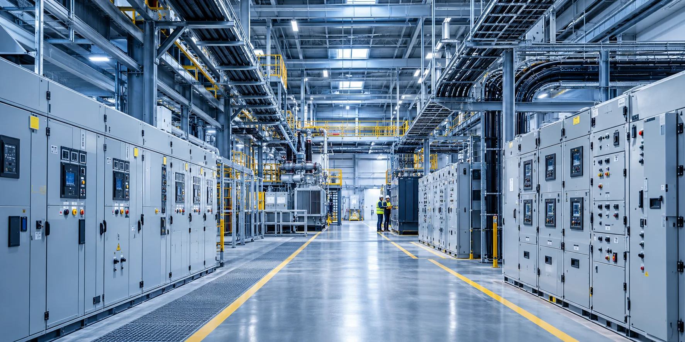

AI illustration01
AI illustration01Fengmiao I
Offshore substation · HV package leadership
Explore projectPROJECT EXPERIENCE
Explore six selected projects and the founder’s specific contribution to each, with project context drawn from public developer and operator sources.
These profiles describe Eric Chang’s experience gained at the named employers. They are not GridWave contract awards or client endorsements. All project images are AI-generated illustrations.
6 projects
AI illustration01Offshore substation · HV package leadership
Explore project AI illustration02
AI illustration02Offshore Wind · Commissioning preparation
Explore projectAI illustration03Offshore wind · Requirements & tender evaluation
Explore project
AI illustration04Offshore substations · HV components & factory testing
Explore projectAI illustration05Onshore grid connection · Grid integration & energization
Explore projectHigh-voltage operations · Substation operations & maintenance
Explore projectTry another name, location or discipline.
START A CONVERSATION